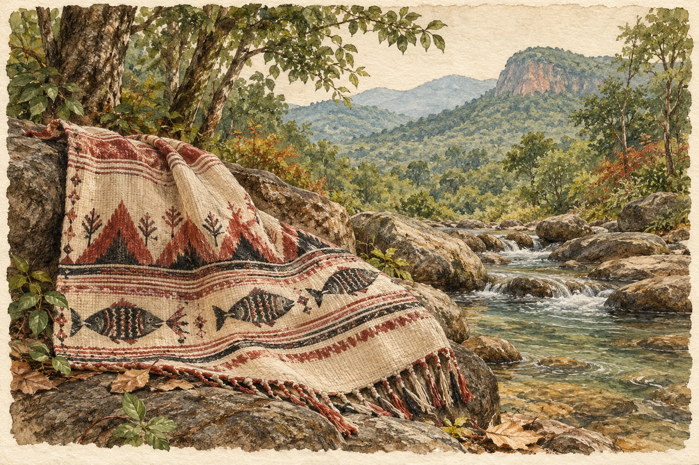

Original poem · ଓଡ଼ିଆ
କୋଟପାଡ଼

**
ମାଛ:
ବିନ୍ଦୁ ବିନ୍ଦୁ କରି ସିଲେଇ କରିଲା ଆକାର
ଏ ମାଛ ନା? ଦୁଇ ଗୋଡ଼ରେ ଠିଆ ଏକ ତୀର?
ବା କହିପାର, କାତ ଧରି ଡୁଙ୍ଗି ବାହିଯାଉଛି
କ୍ଷେତ ପହଣୀରେ ପହଁରୁଛି ମାଛ,
ହାତ ଅଛି ଗୋଡ଼ ଅଛି
ହେଲେ ମୁଣ୍ଡ ଗଡ଼େଇ ଦେଇଛି ମଣିଷଟିଏ?
ଶୁଖୁଆ ଚୁନା ମାଛ ଚାରିଖଣ୍ଡ ଚଟକି ଯେ ଥିର ପିଏ !
ଦନ୍ତରା ପାହାଡ଼:
କରମଙ୍ଗା ପରି ଧାର ତାର
ଡେଇଁ ଦେଲେ ଯାହା ଦିଶେ
ଫେର୍ ପାହାଡ଼, ଫେର୍ ଜଙ୍ଗଲ,
କୋଟପାଡ଼ ଲୁଗା ଧଡ଼ିରେ କୁମ୍ଭ
ହାତ ଧରାଧରି ଡୁଙ୍ଗ ଡୁଙ୍ଗା ଶୁଣେ
ଧାଡି଼ ବାନ୍ଧେ - ଗରା, ଡେକଚି, ପିଇବାପାଣି ପାଇଁ ଶୁଖିଲା ଦିନମାନଙ୍କରେ
ଖାଲିପାଦ ଚାଲେ କୋଶେ ବାଟ ଝୋଲା (ଝରଣାର ଶେଯ) ଯାଏଁ, ଆଣ୍ଠୁ ଉଞ୍ଚ ଲୁଗା
ଏବେ ତ, ଗୋଳିଆ ପାଣି, ବଘେଇ ପାଗ
ଧରଣୀ ପେନୁ (ଦେବତା):
ଡାକ ପକାଏ, ରାହା ଦିଏ ଗୁରୁମାଇ
କାଳିସି ଦେଖନ୍ତି ଡମ, କନ୍ଧ, ଗଦବା ମାଇପି
କରଂ ଲୁଗା ପିନ୍ଧି, ଡୋଙ୍ଗରିଆ ଚାଦର ଉଢ଼ି
ମାଣ୍ଡିଆ, ହଳଦୀ ହାଟ ପାର ହେଲେ
କଣ ଆଡ଼କୁ ଫୁଲପକା ଫିତା, ପ୍ଲାଷ୍ଟିକ ମାଳି ଚକମକ
ତାପରେ ଗାଡ଼ି ମଟର,
ଦେହ ଆଉ ଖୁସା କିଣିନିଏ ଠିକାଦାର
ସଞ୍ଜ ଆଗରୁ ଘେରି ଆସେ ଅନ୍ଧକାର
ପୋଡ଼ୁମରା, ରନ୍ଧା ମଦ, କି ପାରା, କୁକୁଡ଼ା
ଆଉ କେବେକେବେ ରକତ ମାଗେ ଦେବତା
କୁଠ-ବସା ବାନ୍ଧି ପୂଜା ମାଗେ ପେନୁ
ଅର୍ଜୁନ ଛାଲି, କଷାଫଳ, ରିଠା, ଅଲ ଚେରମୂଳିରେ ରଙ୍ଗେଇ
ଫିରି- ଘାସ ରାଇଜର
ଆଦିମ ପରିବେଶରେ ଖଦଡ଼ କୋଟପାଡ଼ ଲୁଗା
ପାହାଡ଼, ପେନୁ (ଦେବତା) ଆଉ ମାଛ
କିମ୍ବଦନ୍ତୀ ପରି ନିବିଡ଼ ଏ ସାଙ୍କେତିକ ଆକୃତି
କୋରାପୁଟିଆ ଭେକରେ, ଭୋକରେ!
**
_ଶକୁନ୍ତଳା
Read at source ↗
Poems appear in their original language. The language selector changes the website text.